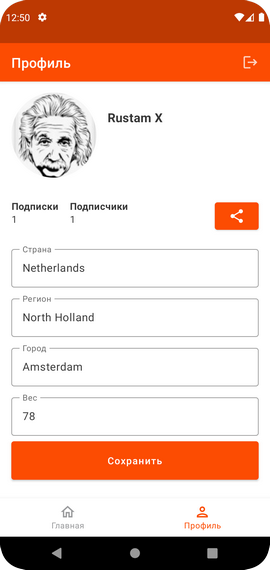
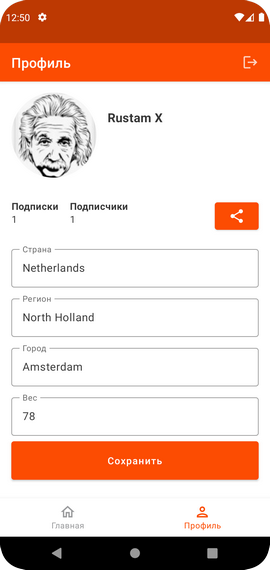

Харисов Рустам
Андроид-разработчик
Я - Харисов Рустам, мобильный разработчик, работаю в ООО “Агро-Сервис”, г.Казань.
Разработал для предприятия мобильное приложение для Андроид “Заказ-наряды Агро-Сервис”,
которое позволяет автоматизировать работу сервисных инженеров:
сервисные инженеры в оффлайн-режиме заносят заказ-наряды в приложение, затем производят
синхронизацию данных и выгружают заказ-наряды в 1С.
Стек технологий, которые я использовал в своих приложениях
(в описании к каждому приложению приведен конкретный стек для данного приложения)
- XML-верстка
- Coroutines
- MVVM (UDF-подход)
- Room
- Retrofit
- Hilt
- Dagger2
- Clean Architecture
Заказ-наряды Агро-Сервис
https://github.com/harisov-mobile/WorkOrderApplication
Мобильное приложение “Заказ-наряды Агро-Сервис” разработано для автоматизации работы с заказ-нарядами для сервисных инженеров.
В качестве бэк-энда используется программа “1С-Альфа-Авто 5”.
Сервисный инженер в оффлайн-режиме заносит заказ-наряды в приложение, затем производит синхронизацию данных и выгружает заказ-наряды в 1С.
Приложение опубликовано в Гугл Плей Маркете: https://play.google.com/store/apps/details?id=ru.internetcloud.workorderapplication
Стек приложения "Заказ-наряды Агро-Сервис"
- XML-верстка
- Single activity
- Multi-module (модули разбиты по фичам)
- Coroutines
- MVVM (UDF-подход)
- Room
- Retrofit
- Hilt
- Clean Architecture


Где я?
https://github.com/harisov-mobile/WhereAmI
Приложение “Где я?” показывает Ваше текущее местоположение на карте.
Приложение может показать маршрут от Вашего местоположения до выбранной точки на карте.
Маршрут можно показать для пешехода, для велосипедиста или для автомобиля.
В качестве картографического сервиса используется OpenStreetMap, библиотека Osmdroid.
Приложение опубликовано в Гугл Плей Маркете: https://play.google.com/store/apps/details?id=ru.internetcloud.whereami
Стек приложения "Где я?"
- XML-верстка
- Single activity
- Single module
- Coroutines
- MVVM (UDF-подход)
- Dagger2
- Clean Architecture
- Osmdroid
My Strava
https://github.com/harisov-mobile/kts-2023-strava-app
Приложение “My Strava” - клиент для сервиса Strava.
Strava - это сервис для отслеживания активности спортсменов с помощью мобильных устройств и социальная сеть для спортсменов,
где спортсмены могут сравнивать свои результаты, ставить цели, общаться и т. д.
Функционал приложения:
Для пользователя, который авторизовался в приложении с помощью аккаунта Strava:
- Просмотр тренировок пользователя;
- Просмотр детальной информации о тренировке;
- Добавление новой тренировки пользователя или редактирование существующей тренировки;
- Просмотр информации о профиле пользователя;
- Оффлайн-режим;
- Логаут (выход из аккаунта пользователя).
Стек приложения "My Strava"
- XML-разметка & Compose
- Single activity
- Single module
- Coroutines
- MVVM
- MVI Kotlin (на одном из экранов)
- Room
- Retrofit
- AppAuth (авторизация по стандарту OAuth 2.0)
- Koin
- Clean Architecture

 

Опыт работы
ООО "Агро-Сервис"
Андроид разработчик
2022 - по настоящее время
Разработал мобильное приложение для Андроид “Заказ-наряды Агро-Сервис” для автоматизации работы с заказ-нарядами для сервисных инженеров.
Ссылка на приложение в Гугл Плей Маркете: Work Order Application
Различные
организации
Программист 1С
2012 - 2022
Доработки конфигураций 1С УТ10.3, Альфа-Авто-5, БП 3.0 под задачи предприятия, создание двустороннего обмена между УТ10.3 и веб-сайтом предприятия на HTTP-сервисах (REST).
Создание различных печатных форм, отчетов, обработок для 1С, правил конвертации для КД 2.0 для обменов и т.д.
На одном из предприятий удалось поработать по методике Agile со спринтами, ретроспективами, “покером”, стори-поинтами и т.д.
Различные
организации
Инженер-программист
2008 - 2012
Доработка существующих программ на FoxPro.
Создание небольших программ для внутренних нужд предприятия на Delphi.
Доработка программ на Visual Basic for Access.
Интеграция между существующими на предприятии базами данных MS SQL Server, MS Access и 1С:УПП 8.1.
Образование
Казанский государственный технический университет им. А.Н.Туполева (КАИ)
Инженер по автоматизированным системам управления
2002 - 2008
Факультет технической кибернетики и информатики. Кафедра Автоматизированных Систем Обработки Информации и Управления.
Хобби
- Прогулки на велосипеде в парке.